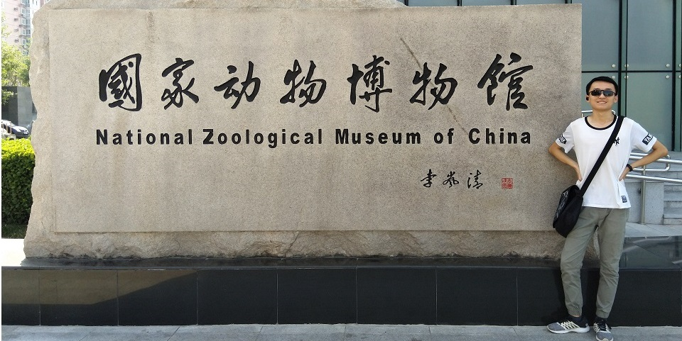

About Me
Welcome to my personal Homepage!

Education
BeiHang University,Shenyuan Honors College 2018-2022
Automation, Pattern recognition and intelligent system
Xi'an Tie Yi High School 2015-2018
Projects
1.National College Students' Innovative and Entrepreneurial Training Plan Program
Lead author 2020.06 - 2021.06
Official Web
Using neural network model, this paper studies the translation of ancient Chinese poetry into modern Chinese through supervised and unsupervised learning.
2.Feng Ru 3 UAV CO-DEVELOPER 2018.10 – 2019.10
Participated in the UAV fuselage manufacturing, wing installation and maintenance work, supervised the UAV to complete the flight task through the flight control platform, and created a world record certified by FAI.
(Media Reports: China Youth Daily,
Official account of BeiHang University)
3.Intelligent vehicle embedded development - CO-DEVELOPER
The program is written in C to obtain and process a variety of sensor information, and PID is used to control the vertical two wheel car and four wheel electromagnetic car to complete the track.
(Download PPT)
4.Virtual physical experiment simulation environment construction
Using unity software modeling and C# to simulate basic physics experiment.
Skills
Programming Languages:
Proficient: Python, Matlab, C
Experienced: C#, Verilog, Java, HTML, assembly language
Extracurricular activity
Federation of Student Associations - Publicity Officer 2018.9 – 2019.6
School student union - Director of information and media department 2018.9 – 2019.6
Official account of 'Qing Xi Tie yi' - Operation editor 2018.6-2019.6